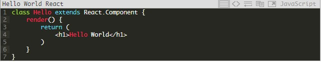

React
React is an open-source library created on Facebook. Offers a new approach to creating user interfaces in JavaScript.
In this presentation, we will cover several topics with a minimum set of knowledge necessary to start creating applications:
• What is React and an overview of its advantages;
• How to use JSX - a JavaScript syntax extension is used in React to describe components;
• How to create components, what are props and state;
React Definition
To clearly understand what React is, I want to offer this option:
1) React is a library for creating component-oriented user interfaces using JavaScript and (optionally) XML.
2) It includes the concept of dividing the user interface into components, self-contained parts that are easy to maintain, expand and reuse.
3) Components can be described in JavaScript, but this can also be done in XML with HTML similar syntax called JSX.
React can be used to build components in the browser and on the server side, that is, the final HTML will be generated not on the client,
but on the server, which allows you to build so-called isomorphic applications + to avoid SEO problems inherent in single-page applications.
But that's not all, with React you can create native mobile interfaces (React Native).
The main mechanism of React work:
Virtual DOM:
Before we begin to delve into what a virtual DOM is, let's talk a bit about what a real DOM is.
DOM (abbreviation for Document Object Model) is a way of representing a structural document using objects.
This is a cross-platform and language-independent agreement for the presentation and interaction with data in HTML, XML, etc.
The main problem of the DOM is that it was never designed to create a dynamic user interface (UI). We can work with it using JavaScript and libraries like jQuery, but using them does not solve performance problems.
Look at modern social networks like Twitter, Facebook or Pinterest.
After a little scrolling, we will have tens of thousands of DOM nodes, effectively interacting with which is not an easy task.
Another option is to use the approach with Virtual DOM.
Virtual DOM is not a standard and in the end, we still interact with the DOM, but we do it as little as possible and more efficiently.
Instead of interacting with the DOM directly, we work with its lightweight copy. We can make changes to the copy based on our needs, and then apply the changes to the real DOM.
In this case, the DOM tree is compared with its virtual copy, the difference is determined and the redrawing of what has been changed is started.
This approach works faster because it does not include all the heavy parts of the real DOM.
But only if we do it right. There are two problems: when exactly do the DOM redraw and how to do it efficiently.
React advantages
1) Reactive rendering.
Before Ajax, any web page was reloaded on any user action to display new data. Which was not a very effective solution when it was necessary
to update only a part of the data. With the advent of Ajax, it was possible to update data on a page in parts. So-called single-page applications
when only one page was loaded and all subsequent requests were processed without a complete page reload.
Reactive rendering is easier to use than traditional data binding. It allows us to write in a declarative style how components should look and behave. In order not to change the DOM tree every time the data is changed, React has a lightweight copy of the DOM tree that contains the current state. When data is changed in a virtual React DOM tree, a comparison is made with the real DOM and changes occur only where it is really necessary. What makes React very fast and efficient.
2) Component-oriented development.
In React, everything consists of components that are self-contained building blocks. All this beauty pursues the principle of "divide and conquer" in which no part should be particularly complex. From smaller components, you can easily create complex and more versatile components.
3) Flexible abstraction of a document model.
React has its own user interface representation, which abstracts the basic document model. The most noticeable advantage of this approach is that it allows you to use the same principles for rendering HTML, for example, native iOS and Android user interfaces. And it gives the following advantages:
• Events behave in accordance with the standards in all browsers and devices;
• The final HTML React components can be built on the server side, which avoids SEO problems and build isomorphic applications;
"Hello World"

In essence, this is a simple JavaScript ES6 class, with the only render method, which is responsible for the component rendering. You should have noticed in the middle of H1 this is the XML declarative markup for describing React components, and all this is called JSX in place. Which should be converted to a simple JS, and for this we need additional tools later we will configure them.
React - Workflow
The workflow looks something like this:
• After writing, JSX should automatically turn into JS
• Write code in the form of modules
• Be able to manage dependencies
• Create JS files and map files for debugging
The importance of props
Property are of key importance in the composition of components. They are the mechanism used in React to transfer data from parent to child. The details cannot be changed from within the child component to which they were transferred.
Component Creation
Having decided on the hierarchy of components, it's time to create them. There are two obvious approaches to building components: top to bottom or bottom to top. In order to get an idea of all the props used in child components, it makes sense to start building your components from top to bottom.
What is a «state»?
So far, we have only seen static components. To add dynamics, we must somehow tell React what we want to change and when. In React components,
mutable data is declared and stored inside this.state. Note that this.state for each component of its own and this.state is changed through a call
to this.setState (). The principle is as follows when we call this.setState (), the component and its children are reactively rendered. As already mentioned,
this is a fairly quick operation by using a virtual DOM tree.